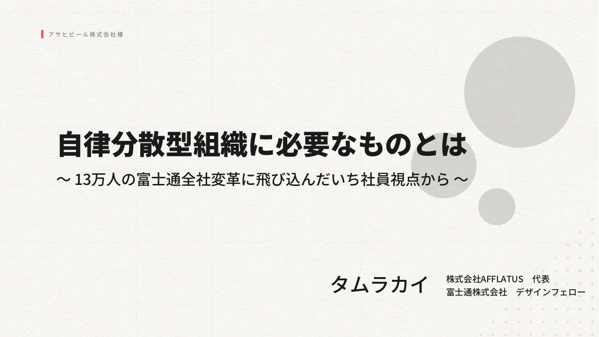
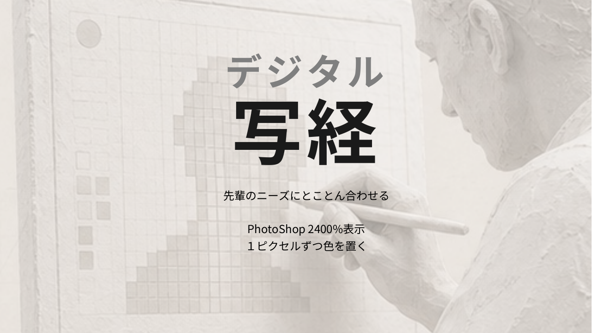
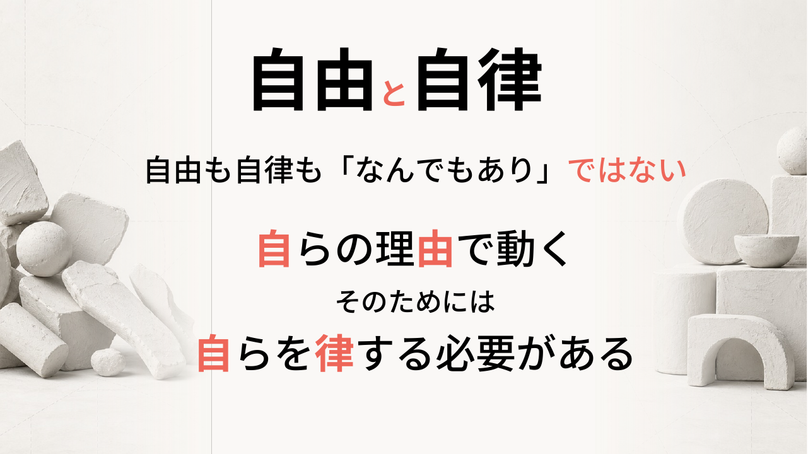
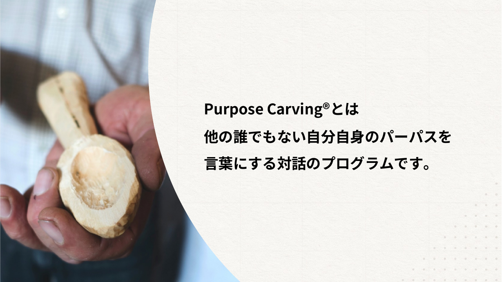
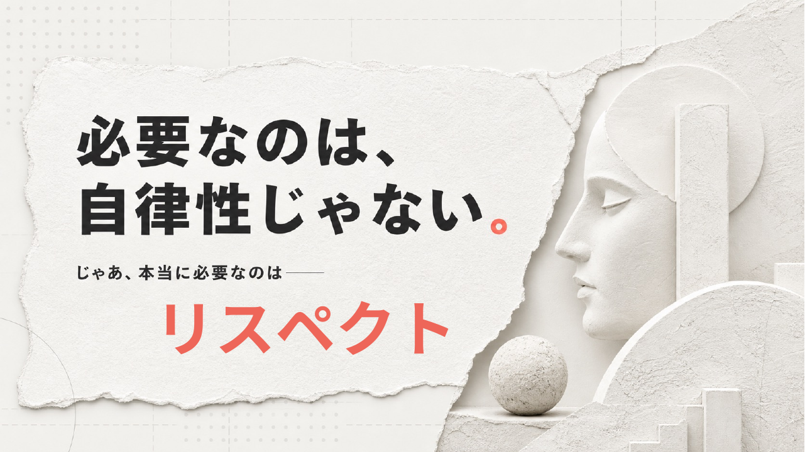
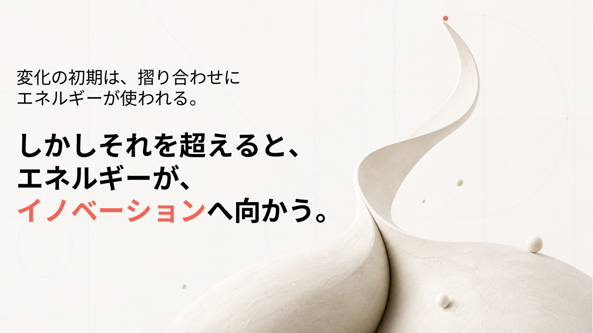

この講演は、一つの宣言から始まる。語り手のタムカイは、富士通という13万人の巨大組織の全社変革を、経営の側からではなく、一人の社員として内側から見た人間だ。だからこそ最初に立ち位置をはっきりさせる。
タムカイ
「本日は『自律分散型組織に必要なものとは』というテーマです。当時13万人いた富士通の全社変革に、僕は本当にアサインされたというよりも、一社員として飛び込んでいったんですけれども、その飛び込んだ一社員の視点から見たものをお伝えできればなと思っております。なので、経営側であるとか、こういうことをやったんだという話よりも、一人の人間でもいろんなことができるんだよというヒントになったり、もちろんその一人ではできなかったという話も含めて、お話しさせていただければなと」
「アサインされたというよりも、飛び込んでいった」——この言い換えに、講演全体の重心がある。上から指示されて動いた成功談ではなく、現場の一人が何を見て、何ができて、何はできなかったか。だからこそ聞き手にとっての「ヒント」になる、という設計だ。
自律分散型組織
中央集権的な指揮命令ではなく、構成する個々のメンバーが自らの判断で動き、その相互作用から全体の秩序が立ち上がってくる組織のあり方を指す。語源的には自然科学・システム論の「自律分散システム（autonomous decentralized system）」に近く、中心が壊れても全体が崩れない頑健さが特徴とされる。
経営学では、ティール組織（フレデリック・ラルー）やホラクラシーといった概念がこの系譜にあり、ヒエラルキーに依らない自己組織化を理想として描いてきた。
ただしこの講演では、それを制度や組織図の話としては始めない。タムカイは「一社員として飛び込んだ視点」から語ると宣言する。つまり自律分散とは、まず一人の人間が自律していくことの積み重ねとして見える——組織論の前に、個人の変化の物語として開かれていく。それは何を意味するのか。
ここで自己紹介に移る。名前の話から、キャリアの輪郭がたどられていく。
タムカイ
「僕のキャリアとしては、2003年に富士通にデザイナーとしてプロパーで入社をして、その後ずっと富士通の所属で、今は個人の活動もしているという人間です。入社した時には、いわゆるUI、UXのデザイナーということで、パソコンのウェブのシステム周りのデザインや、携帯電話の画面のデザインをやっていました」
当初のデザインは、オーダーに応えて「こういうものができました」と返す仕事だった。だが時代が変わる。発注する側も何が欲しいかわからない、作る側も探索している——その空白から、彼の仕事は形を変えていく。
タムカイ
「お客様自体も何が欲しいかがわからない、僕たちも何を作るかを探索している。そんな中で、お客さんと一緒に、共創という言葉が出てきて、ワークショップであるとか、いろんなディスカッションの場を自分が作るようになっていって、そこからファシリテーターのような方向に進んでいった、そんな人間だったりします」
「作る人」から「場をつくる人」へ。この移動が、のちに組織変革の現場で効いてくる伏線になる。そして2025年、彼は富士通の制度を使って自分の会社を立ち上げる。
タムカイ
「2025年に富士通の一つの制度を使わせてもらって、自分の会社を作って、事業探索をメインにすることを許してもらったので、今は株式会社アフレイタスというのを自分で作って、その代表をしながら、富士通には、名前が欲しいので『デザインフェローって名乗っていいですかね』って言ったら役員が軽く『いいよ』と言ったので、勝手に名乗っているデザインフェローという言い方をしているんですが、何かあった時には声かけてね、みたいな形のことをしています」
「名乗っていいですかね」と訊いて「いいよ」と返ってくる、この軽さ。肩書きが上から与えられるのを待つのではなく、自分から取りにいって、組織がそれを許す。後半で語られる自律分散型組織の空気が、この小さなやりとりに先取りで現れている。
もう一つ、彼には会社の外で長く続けてきた仕事がある。人にラクガキを教える仕事だ。
タムカイ
「絵心がないという方が多いかと思うんですが、そんな方でも絵心は実はみんなにあって、力をつければ描けますよ、というワークショップ型のものをしたり、それで本を出させてもらったりということをやっていました」
「絵心は誰にでもある」——これは才能神話への、静かな反論だ。描けないのは才能がないからではなく、力をつけていないだけ。生まれつきで線が引かれているという思い込みを疑うこのまなざしは、このあと講演を貫く一つの確信の縮図になっている。
才能神話
特定の能力は生まれ持った素質（才能）によって決まり、後天的には変えられない、とする通俗的な信念を指す。「絵心がない」「自分には向いていない」といった言葉は、この神話を前提に語られることが多い。
心理学者キャロル・ドゥエックの「マインドセット」研究は、これに正面から反論する。能力を固定的に捉える「硬直マインドセット」に対し、努力や学習で伸びると捉える「しなやかマインドセット（growth mindset）」を持つ人ほど、実際に成長していくことを示した。
この講演で「絵心は誰にでもある」と言うとき、タムカイは才能神話を一枚はがしている。そしてそれは絵の話にとどまらない。人は変われない、組織は変われない——その「どうせ無理」もまた才能神話と同じ構造の思い込みではないか。ラクガキ講座は、その問いを身体で証明してきた実験場だったのではないか。
会社の仕事も、個人の仕事も、組織の中での動きも。それらが絡まりながら、彼は「自律した人材」と呼ばれるようになっていく。だが彼自身は、その出来上がった姿を見せたいわけではない。どうやってそうなっていったのか、そしてその人間が組織に入って何を起こせたのか——プロセスのほうを語りたいのだ。そのうえで、今日のテーマを「問い」のまま置いておく、と断る。
タムカイ
「『自律分散型組織に必要なものとは』ということで、最初にここに問いを置いた状態で始めさせていただいて、だんだんと何かなとみんなで考えながら、僕からも最後の方に伝えていく、そんな構成で話をしていければなと」
答えを先に渡さず、一緒に考えながら進む。この構成そのものが、聞き手を自律的な思考に巻き込もうとする仕掛けになっている。そして、講演を最後まで貫くメインメッセージが提示される。
タムカイ
「今日ずっと言いたいメインメッセージとして僕が持っているのは、人は変われる、組織も変われる、そして変わり続けられるんだよ、ということです。『どうせ無理でしょう』と言うことは実は簡単なんですが、そう言わなければ、人も組織も変われるし、変わり続けられるんだよ、ということをお伝えできればなと」
注目すべきは「変えられる」ではなく「変われる」と言っていることだ。のちの質疑で、彼はこの一語の差にこだわってこう語る。「『人は変えられる』というところから始まると、こちらの思い通りに相手が動くみたいなことになってしまいがちなので、だから一番最初のメッセージで『人は変われる』というのを先に置かせていただいた」。変える主体は自分ではなく、変わる主体は本人。他律ではなく自律。序章の宣言は、すでにこの講演の核心へとまっすぐ向いている。
「人は変われる」と言い切るその根拠を、タムカイは勇ましい変革の成功譚に求めない。彼が最初に差し出すのは、自分自身が壊れかけたという、極めて私的な失敗の記憶だ。
タムカイ
「何より僕自身がそうだったという話を最初に差し込ませていただくんですが、めちゃめちゃお恥ずかしい話で。僕、社会に出た2003年、一年目に、友達が一人を残して全員いなくなるという事件というか、状態を自分で作ってしまったことがありまして」
なぜ友達がいなくなったのか。原因は外ではなく、自分の中にあった。彼はその構造を、隠さずに解剖してみせる。
タムカイ
「デザイナーって我の強い人間がなることが多くて、僕も多分に漏れずそういうところがあった。会社に入ってバリバリ活躍できるかというとできなくて、でも自分のプライドがあるから、みんなに『大したことないね』と言ったり、不遜な態度をとっていったら、人ってマジで、じゃあって言わずに離れていくんですよ。本当に一人また一人と、自分から距離を置いていった。本当に自分のことしか見ていなかった時がありました」
その「自分のことしか見ていなかった」時期に、たった一人だけ残った友達がいた。武蔵中原の「たけしくん」という飲み屋。そこで投げかけられた言葉が、彼の転回点になる。引き返せる場所と、引き返せない場所のあいだに、線を引くような問いだった。
タムカイ
「よく行ってた店で、本当に行こうやと言って行って、『お前な、わかるよな』『今こういう風になってるぞ』と。その時に言われたのが、『今ここで変わるんだったら、俺はもうちょっとお前の近くにいるけど、お前がもし無理だって思うんだったら、もうここまでなんだけど、どうする』と。それで僕は『いや、ごめん、もうここからちゃんと変わるわ』と言って、そう思いました」
ここでタムカイは、エピソードを一段抽象化する。人は変われる。だが、ただ変われるのではない。変わるためには、ある決定的なものが要る——と。
タムカイ
「人は変われるんですけれども、そのために必要なものは、僕は覚悟だと思うんですね。この覚悟は来る場所がいろいろあって、その一つが、やっぱり危機感のようなもの。僕の場合だと人がいなくなってしまったというのもありましたし、実は企業変革の理論を唱えているコッターという学者がいるんですけれども、その方も、最初にやることは危機感の醸成であると言っています」
個人的な飲み屋の一夜が、ここで組織変革論と接続される。タムカイの語りは、こうして私的な記憶と理論を一本の線でつなぐ。変わる必要を感じていない人間は変われない、という当たり前を、彼は自分の身体で確かめていた。
危機感の醸成（Sense of Urgency）
組織が変革に踏み出す最初の一歩として、現状への危機意識を組織内に広く共有することを指す。語源的には「変わらなければまずい」という切迫感を、個人の感情から集団の温度へと引き上げる営みを意味する。
ハーバード・ビジネス・スクールのジョン・コッターは、著書『Leading Change』で変革を8段階のプロセスとして定式化し、その第一段階に「危機感を高めること」を置いた。順序が崩れて危機感の共有を飛ばすと、その後の施策がどれほど正しくても組織は動かない、というのが彼の主張である。
この講演で興味深いのは、タムカイがコッターの理論を、経営の側からではなく、飲み屋で友達に詰められた一個人の体験から語り直している点だ。危機感は経営が上から「醸成」する装置である前に、一人の人間の腹の底で先に灯る火なのではないか。だとすれば、組織の危機感とは、そうした個々の火がどう連鎖していくかという問いに変わる。
タムカイ
「変わらなきゃいけないなという思いをみんなで持つこと、そして変わっていこうと思うことが、実は重要なのかなと。こうやって人が変わっていって、それがつながっていけば組織も変われると思っていますし、自律分散型組織というものにもなっていくのかな。それは組織全体がというよりも、一人一人がそういった思いを持っているということが重要だと思います」
では、その「自律した一人」とは、具体的にどんな人間なのか。タムカイは聴衆に問いを投げ、チャットに自律した人の特徴を書いてもらう。流れてきた言葉を、彼は嬉しそうに拾っていく。
タムカイ
「自分の周りで、この人自律してるなーっていう人を思い浮かべてください。名前じゃなくて、その特徴を書いてみてほしいんです。……信念を持っている。自分で仕事を見つけてくる。考えた意見を自分の言葉で伝える。人のせいにしない、責任感。最後までやり遂げる。いつもご機嫌。ああ、いいですね」
そして自分が用意してきた言葉を重ねるとき、彼は一つだけ、意外な要素を滑り込ませる。「自律」という言葉のイメージを、そっとずらすために。
タムカイ
「オーナーシップがある、自分に理由がある、自分軸がいい、段取りがいい、とか。でも実は、周りをよく見ている、みたいなのも自律なのかなと思って入れました。自分だけじゃないというところ。『自』という字が入っているからこそ重要かな、と」
自律とは、自分を強く押し出すことだ——そう思われがちな言葉に、タムカイは「周りをよく見ている」という一見逆向きの要素を差し込む。この違和感が、章の後半、デジタル写経のエピソードで回収されることになる。再び社会人一年目。友達を失ったのと同じ時期、仕事もまったく通らなかった。
タムカイ
「デザインの部署にいたので社内コンペがあって、先輩が取りまとめて、僕ら下の人間に何案か作らせる。僕はトレーニーだったので試しに作ってみなという感じだったんですが、一年目の秋ぐらいまで、1回も社内のゲートすら通れない。さすがにこれだけ通らないと心が折れていって。その頃、先輩から『入社試験で見てたんだけど、君だけは別に来ないでもいいかなと思ってたんだよね』と、笑いながら言われたんです」
次のコンペで通らなければデザインをやめる。そう決めた最後の一回で、彼が選んだ方法は、自分らしさを貫くこととは正反対だった。

タムカイ
「デジタル写経と呼んでるんですけれども。毎回コンペで抑えだよねと言われている先輩がいて、その人のデザインは素敵だなと思ってた。でも僕はその時、自分の味とか色、やりたいことをやるのがかっこいいと思ってたんです。半年そんな時期が続いて、そういうことじゃないんだなと気づいたので、まずはあれをできるようになろうと。共有サーバーにあるその先輩のPhotoshopファイルをダウンロードして、最大拡大したら2400%、ピクセル一個一個、グラデーションの角度、色の変わり方を全部トレースして、1回同じものを作りました」
守破離（しゅ・は・り）
日本の芸道・武道における修練の段階論で、まず型を忠実に守る「守」、型を破って応用する「破」、型から離れて独自を確立する「離」へと進む。世阿弥の能楽論や千利休の茶道に源流を持ち、近世の芸道伝書を通じて広く定着した。
教育学・スキル習得論の文脈では、ドレイファス兄弟の技能習得モデル（初心者から熟達者への段階）とも響き合い、初学者がいきなり独創を目指すのではなく、まず既存の型を身体化することが上達の前提になる、という知見と重なる。
この講演でタムカイは、デジタル写経をはっきり「守破離の守」と呼ぶ。注目すべきは、彼にとっての「守」が技術の模倣にとどまらない点だ。先輩のファイルを2400%で写し取る作業は、自分を一度捨てて「相手」を理解する行為だった。型を守るとは、他者の理由をなぞること——ここで「守」は、自律の話で滑り込ませた「周りをよく見ている」と一本につながる。型を守ることと自分を出すことは、はたして対立するのか。それとも順番の問題なのか。
完璧に写し取ったあと、彼の中で予想しなかったことが起きた。
タムカイ
「とことん合わせた。そうすると何が起きたかというと、なんかね、出せるなって思ったんですよ。相手が初めて分かって、初めて自分らしさが出せるようになった、ということがあって。練習の次の本番のデータはもう一度作るので、あの時学んだものをやろうとしても、新しい要素が入ってきたり、自分の好きだったものもそこに乗っかってくる。人がちゃんと与えてくれたベースの上に自分らしさが乗ることで、自分らしさが言葉にできるものになってきた」
そしてこの一連を、上司や先輩がちゃんと見ていた。技術の習得以上に、関係そのものが変わっていく。
タムカイ
「この一連を見てくれていた先輩や上司と、ここからすごく関係が変わって。自分だけがやりたいことを自分だけでやろうとしても無理なんだ、相手がいてそれに合わせて、その中で出していくことが重要だよね、と。自分を捨ててもう一度新しい要素を入れたことで、すごい成長があって、その後はその第一案を作る先輩のほぼ代わりぐらいで任せてもらえるようになった。任せてもらえると、次を作るだけじゃなくて、こんな風にしたらいいんじゃないかと言える、そんな循環が生まれた」
「変われる」を入り口に始まったこの章は、後の質疑応答で、もう一段深いところへ運ばれる。聴衆を変えてきたのではないか、という進行役・三浦の問いに、タムカイははっきりと言葉を選び直す。
タムカイ
「『人は変えられる』というところから始まると、ちょっとおかしなことが起こるなといつも思うんですね。変えられるの方向だと、こちらの思い通りに相手が動くみたいなことになってしまいがちなので。だから今日一番最初のメッセージで『人は変われる』を先に置かせていただいた。すべての人が、何か覚悟があって何かをすると変わっていける、というのは信じています」
「変えられる」と「変われる」。一字違いのこの二つを、タムカイは決して混同しない。前者は操作であり、後者は本人の覚悟だ。では他者に対して自分ができることは何か——彼の答えは、相手の「やりたい目」を見つけて、そっと押し出すことだった。
タムカイ
「これやってみたいですということを全力でやってみよう、と後押しをしていました。『一緒にグラレコやってみたそうですよね』って目で見られると、向こうは何か言えなかったりする。でも『やりたい目ですよね』って言って巻き込んでやってもらうと、その人が次もっとやりたいですになることは多い。だから、変われるということのために自分が何をできるかを、すごく感じていました」
写経で「相手が分かって自分が出せた」彼が、今度は誰かの「やりたい目」を見つける側に回る。変わるのはあくまで本人。その覚悟の火を、外からどう照らすか——「変えられる」と「変われる」のあいだに引かれたこの一線が、続く章で組織全体へと拡がっていく。
デジタル写経で「相手がわかって初めて自分らしさが出せる」と気づいたタムカイは、それを自分にとっての「自律の入り口」だったと振り返る。だが面白いのは、その入り口が想像とは逆の場所にあったという点だ。
タムカイ
「これが僕にとっての、多分、自律の入り口だったんだなと思うんですね。イメージだけで言うと、自分軸がもうバリバリあって、どんどん自分を出していく、みたいなところに自律がありそうだったんですが、意外にそうではないなと思った。会社の仕事も変わっていったんですけれども、僕の性格もあって、大企業の社員だけだと、この後結構厳しいかもしれないな、とふと思う瞬間があったので、会社の外でいろんな人に会いに行くという時間をやっていました」
ここで彼は、よくある誤解をひとつ正す。外に出たのは副業のためではなかった、と。
タムカイ
「よく『副業をやろうとして会社の外でラクガキ講座を教えてたんですね』と言われるんですが、そうじゃなくて、会社の外に知り合いを作りたいなと思って、いろんなイベントに行っているうちに、SNSで繋がる友達ができて。美術をやってこなかったという人が、僕が絵を描いているのを見て『そんなことができたらいいな』とポロッと言ったので、『じゃあ教えますよ』と軽い気持ちで教えたら、それが僕の新しい仕事になっていった。自分のやりたいことというよりは、自分のできることが、他の場所に行ったら見つかった」
「やりたいこと」ではなく「できること」が外で発見される。この非対称が、やがて個人と会社をつなぐ循環を生む。
タムカイ
「お客様とワークショップをするのがちょうど僕の仕事に重なってきた時に、人を巻き込んで絵を描いたり発想したりを外でやっていたので、そのまま仕事として会社の中に持ってきた。個人でやったことを会社に持ってくる、会社で学んだ経験が——機密情報ではなく、お客さんと関係を作るみたいな経験が——また個人のところで生きる。そういうサイクルが回っていって、他の人にはあまりないキャリアになっていきました」
循環（個人⇄会社）
循環とは、閉じた系の中を要素が巡り、出発点に戻りながら全体を更新し続ける運動を指す。生態系の物質循環や経済の貨幣循環など、片方向の「移転」と区別される概念である。
経営学の知識創造理論（野中郁次郎のSECIモデル）は、個人の暗黙知と組織の形式知が螺旋状に変換され合う運動として組織学習を描いた。個人と組織は知が往復する場として相互に入れ子になっている。
この講演でタムカイが語る循環は、SECIのような制度化された仕組みではなく、一従業員が私的に始めた往復が結果として回り出したものだ。外で見つけた「できること」を会社に持ち込み、会社で得た経験がまた外で生きる——この自然発生的なループは、誰の許可で回り始めるのだろうか。
その代表例が、会議やイベントの内容をリアルタイムに絵で描き起こすグラフィックレコーディング（グラレコ）だった。外で知り合った人に誘われて大きなビジネスカンファレンスで描いたことが、思わぬ場所へとつながっていく。
タムカイ
「それを今度は富士通のイベントでまたやる、ということをやりました。そこに落合陽一さんがいらっしゃっていて、これが平成最後の夏期講習なので2018年なんですけれど、六本木のニコファーレに日本の有識者を集めて、社会課題を全部今のうちに話しておきたい、みたいなイベントで。小泉進次郎さんとのこのイベントでグラレコをやって、ニコ生で中継されていたので、日本でグラレコという言葉が広がっていくきっかけに立ち会わせてもらいました」
活動が大きくなると、一人では回せなくなる。そこで彼は後輩を巻き込み始める。そして、思いがけない景色を目撃する。
タムカイ
「富士通は大企業なので、20代後半から30代前半がすべての責任を持つのは構造上難しいんですが、個人の活動の中ではそれが起こるんですね。後輩に任せていったら、社内からの僕の評価が……僕はあんまり言えないんですけど、会社に行かないっていう実験をしたんですよ。一回も会社に行かずにずっとどこかに行ってる生活をしたら怒られるかと思ったら、意外に大丈夫で。『タムカイは何してるかわからないが、あいつと活動してるやつの動きがすごくいい』と。あのプロジェクトに入れてみたら自分から声を発するし、やりたいことをやる、だけど決して自分勝手ではない。人の自律性が高まる瞬間を、幸いにして見せてもらいました」
任せると、人が育つ。その経験を一区切りつけるために、タムカイは「自由」と「自律」という二つの言葉を正面から定義し直す。

タムカイ
「自由も自律も、どっちも何でもありではないんですよね。自由っていうのは、自らに理由があることを自由と言うんですよ、と。知り合いが言っていて、いいなと思って使わせてもらっている。自らに理由があることを尊重するのであれば、他の人にもちゃんと理由があるということになる。自分一人のやりたいように、という自由ではない。他の人の理由を尊重する必要がある、ということは、自らを律する必要がある。それが多分、自律ということなのかなと。僕は暴走タイプだったんですけれども、これがいいだろうってやっていくのは、実は自律してないとも言える」
自由と自律
自由（freedom/liberty）は明治期の訳語で、「自らに由る」と書く。自律（autonomy）はギリシャ語のautos（自己）＋nomos（規範）に由来し、自分で自分に法を与えることを意味する。
カントは、外的強制ではなく自らが立てた道徳法則に従うことこそ真の自由だと論じ、自律と自由を同じ硬貨の表裏として結びつけた。「自由＝放縦」という素朴な理解への、哲学からの根本的な反論である。
タムカイはこれを「自らに理由がある」と訳し直すことで、独自の射程を与える。理由は私的なものでありながら、他者にも理由があると認める瞬間、自由はそのまま自律へ折り返す。では、組織の中で各人の「理由」を、どうすれば互いに見える形にできるのか——次章のパーパスへの問いがここで開かれる。
この「理由を尊重し合う」設計思想は、制度の形でも富士通に根づいている。質疑で権限委譲の難しさを問われたタムカイは、社内アプリ「aerukamo」の生まれ方を例に挙げた。
タムカイ
「aerukamoというアプリが生まれたきっかけは、システム部門が、Googleでよくある20%の工数を自分に使っていい、という制度を使ってやっていた。じゃあその20%、みんな遊ぶかっていうと全然遊ばないんですよ。どうしてもやりたいから20%を捻出する、みたいな方もいる。迷うときには『ここまではいけるよね』という型を一個持っておく。ただ、制度はあるんだけど使えないってことも結構あったので、『使ってもいいんだ』という空気を作るのも含めてかな、と思いました」
理由をもって動いてよいという余白を、制度と空気の両面から確保すること。個人と会社の循環は、こうした「型」によって偶然から再現可能なものへと変わっていく。
外での活動が自律の循環を生み、自由と自律が「なんでもありではない」ことまで見えてきた。その先に、タムカイのキャリアを大きく動かす出来事が訪れる。富士通の全社変革プロジェクト、後の「フジトラ」だ。だがその入り口は、決して整然としたものではなかった。
タムカイ
「僕の転機になったのが2019年から20年です。富士通の全社変革プロジェクトが始まった。順番から言うと、社長が今の時田に変わり、2019年に日経の全面広告で『富士通はIT企業からDX企業へ』という言葉が出て、パーパスを作るぞ、と言い出しました。正直なその時の現場の声は、まず『IT企業からDX企業へってどういうこと』っていうのがありました」
20年弱を富士通で過ごしてきたタムカイには、こうした号令への既視感があった。彼はそれを自嘲気味に「変革するする詐欺」と呼ぶ。
タムカイ
「変わるぞと言って、あれ、やっぱり何も変わってない気がするな、って。変革するする詐欺って揶揄して言ってたんですけれど、どうせ今回も無理だろう、って最初ちょっとだけ思いました。ただ、まだ自分が本気出してないな、っていうふうに思ったんですね。本気を出して全力でやってみて、それでもできなかったら、やっぱ無理だって自分にも言う権利があるな、と」
「無理だ」と切り捨てる前に、まず自分が全力を出す。その権利を得るために、彼は一従業員のまま変革の中枢へ「潜り込む」道を選ぶ。しかしその手段は、本人いわく「超予想外」のものだった。
タムカイ
「当時のTwitterでエアリプを送る、という。今回の全社変革にあたって、当時SAPジャパンの日本の社長をされていた福田さんが、富士通に電撃入社する、と。僕の知人がこの福田さんのことを知っていたので『あの人が富士通に来るんだ、何か機会あったらお話ししてみたいな』ってエアリプしたら、『それエゴサしていいですよ』ってリプライが来た。リプライが来るっていうことはコミュニケーションが取れるっていうことなので。『じゃあ入社したらまたメールをください、会いましょう』と」
エアリプ
エアリプとは「エアリプライ」の略。SNS上で、特定の相手に向けた内容を、返信機能を使わず宛先を明示しないまま投稿する行為を指す。直接の言及を避けつつ「届くかもしれない」という偶発性に賭ける、緩いコミュニケーションの形である。
公式の組織論からは見えにくいが、これは弱い紐帯（weak ties）の理論——社会学者マーク・グラノヴェッターが論じた「強くない繋がりこそ新しい機会をもたらす」——の具体例とも読める。緊密な業務関係の外側にある回路が、決定的な縁を運んでくる。
この講演の文脈では、エアリプは「再現性のなさ」と「準備の有無」を同時に照らす。偶然の出会いは誰にでも訪れるが、その瞬間に手を挙げられるかは、それ以前の蓄積が決める。あなたの偶然を縁に変えるのは、何だろうか。
そうして上長を連れて役員と面談した席で、タムカイはさらに一歩を踏み出す。
タムカイ
「『君たちはさ、デザイン思考ってできるの、できないなら前職から呼んでくるから大丈夫だけど』って言われたんですね。僕はやってきた自負もあったので『いやもちろんできます』と答えたのと、『このプロジェクトにはデザイナーが重要だと思うんだよね』とポロッと言った。アサインが決まってない状態だったので、もうその場で『僕らを直接ここに入れてくれ』と直談判したら、『やりたいならいいよ』と載せてもらいました」
しかし潜り込んだ先で待っていたのは、綺麗な協働ではなかった。「全然綺麗な話じゃないです」と前置きして、彼はコンフリクトの生々しさを語る。
タムカイ
「全社変革ってどうなったらそれって答えなの、みたいなのが全然ない。しかも集まった人間の価値観が全然違う。一番最初に起こったのは、僕らは現場の一般社員だったので、役員の会議に入れてもらえない。位の違いみたいなのを言われて。逆も起こっていて、僕がキックオフワークショップの担当になったのに、その内容の議論がされる場に僕が入れない、っていうおかしなことが。結構力技で入り込んでいくこともやりましたし、押した分だけ押される。ちょっとバチバチしたなと」
力技だけでは前に進まない。推進メンバーの間にも「何したらいいんだろうね」という不安が広がっていく。そこでタムカイが探したのが、皆が立てる「拠り所」だった。それが、富士通が掲げたパーパスである。
タムカイ
「富士通のパーパスは『イノベーションによって社会に信頼をもたらし、世界をより持続可能にしていく』。でも本当の本当は、DX企業は意味わかんねえなと同じぐらい、『社長が急にパンパースって言い出したぞ』って、揶揄するぐらいのことまで言われていました。匿名掲示板みたいなところなんですが」
転機は、彼自身の足元にあった。会社の仕事も個人の活動もする彼は、自分を一言で説明できず、かねて「世界の創造性のレベルを一つ上げる」を自分に課したミッションとして掲げていた。

タムカイ
「この言葉と考え方は、パーパスと一緒だなと。富士通はいろんな事業をやっているけど、中央に抽象的に収束させるとこういうものだ、と言ってるんだなと。じゃあと思ったのが2つあって、そのパーパスを拠り所にすればいいな、と。あとは会社のものは会社のものとして重要だけど、自分にとってのものもきっとあるでしょう、と。一人一人のパーパスを起点にしてみればいいんじゃないか、と思って作ったのが、後にパーパスカービングと名付けた対話のプログラムです」
パーパスカービング（Purpose Carving）
パーパス（purpose）は「目的・存在意義」を意味する語で、近年は企業が社会における自らの存在理由を宣言する言葉として広く使われる。カービング（carving）は「彫る・掘り出す」。つまり「自分のパーパスを彫り出す」対話のプログラムを指すタムカイの造語である。
この名づけには出自がある。彫刻家を父に持つタムカイは、中学2年のときミケランジェロの言葉を聞いた——「彫刻家の仕事は大理石の中に天使を作ることではなく、大理石の中にいる天使を自由にすることだ」。借り物の言葉で作るのではなく、すでに自分の中にあるものを取り出す。その思想がネーミングに刻まれている。
この講演の文脈では、カービングという言葉は「作る」と「思い出す」の違いを開く。パーパスを標語のように掲げるのではなく、自分が選んできたもの・大事にしているものから彫り出す。あなたの中に、すでに自由にされるのを待っている天使はいるだろうか。
タムカイは、富士通のワークショップではパーパスを「存在意義、存在目的」とシンプルに定義した。他の人や社会がいる中で、自分はどうありたいかを宣言する言葉だ、と。この共有が、変革のチームに思わぬ効果をもたらす。
タムカイ
「大事な価値観や何をやりたいかを先にみんなで共有していると、アイデア出しのときに、全員ちょっとずつアイデアに穴が開いてるんですよね。穴が開いてるなと思ったときには、そこを何とかするというより『なぜそれをしたいと思ったか』という方向にみんな目が向く。横を見て議論するより、前を見て『こんなものはどうだろう』を考える機会が増えたなと」
パーパスは管理職や現場だけのものではない。後の質疑で、参加者が「経営層のパーパスが異なっていたのが印象的だった」と触れたとき、タムカイはこの問いの核心に踏み込んだ。インタビュアーとして社長に直接ぶつけた一言が、忘れがたい答えを引き出している。
タムカイ
「パーパスが異なっていてもいい、というのが経営トップのところから始まっていたのが、結構大きかったなと。僕は社長に『そんな、会社と合わせなくていいんですよ』ってぐらいのことを言ったら、『いや、もう僕は今これなんだ』ってすっごいはっきりおっしゃっていて。意地悪な質問もしました。『じゃあ社長じゃなくなったら何するんですか』って聞いたら、『ワンちゃん、めでたい』って。社長っていう役割をすごく設定されてるんだなと」
会社と個人のパーパスは一致させるものではなく、それぞれが違っていてよい。その前提がトップから示されていたことが、現場の一人ひとりが自分の言葉でパーパスを彫り出す土壌になった。拠り所とは、画一の旗ではなく、各人がそこに自分の理由を重ねられる起点なのだ。
パーパスカービングというプログラムは出来上がった。だが、いいプログラムを作ったところで「全員でやろう」と号令をかけても動かない。タムカイは大企業に長くいた人間として、その空回りを知っていた。
タムカイ
「大企業に長くいるんで分かっていたのが、上司はやれやれ言うけど、あいつらほんまにやってんのかな、みたいな。やってないのにやれっていうやつ、多くないか、みたいな話になってたので、これはじゃあ逆手にとって、社長がやったところから行こう、と」
トップダウンで来た号令だからこそ、トップが最初に身をもってやる。それを動画に残そうと言い出したのも、誰に頼まれたわけでもないタムカイ自身だった。
タムカイ
「社内であってもプロモーションは重要なので、経営層向けのワークショップをやって、その様子を、別に誰にも頼まれてないんですけれども、絶対こういうのは動画に残した方がいいって言って、なんとか元部署の上司と話をして、予算をとって映像を作って」
「経営層からもう始まっている新たなプロジェクト、トップファースト」。動画の中で、社長の時田は自らのパーパスをこう語った。
動画内・時田社長
「この富士通をこういう会社にすることが僕のミッションだから、パーパスって何ですかって言われれば、これ以外に思い描けないかな。それこそが僕自身の存在意義だと思う」
そして、当時副社長だった古田は、ひとことで言い切った。
動画内・古田副社長
「キーワードは愛ですね」
トップファースト
「トップダウン（top-down）」が上意下達の命令系統を指すのに対し、タムカイの造語「トップファースト」は、トップが命じるのではなく率先して最初にやってみせる、という順序を強調する。
組織変革論のコッターは、変革を担うのは権限ではなく信頼に裏打ちされた「導く連合（guiding coalition）」だとし、リーダー自身の行動が変革の正統性を生むと説いた。トップファーストは、その「行動で示す」を変革の起点に据える発想と響き合う。
この講演でタムカイは、質疑でこう言い換える。「トップダウンという言葉にすると、トップと同じことをやらなければいけない、になりがち」だが、トップファーストは「トップが自ら、ここはこう任せられるよと話す」こと。号令と率先は、どこで分かれるのだろうか。
役員ワークショップを企画したはいいが、誰が社長に頼みに行くのか。
タムカイ
「じゃあこれを誰が社長に言いに行くんだい、って言ったら、みんなが僕の方をパッて見たんで。横に偉い役員がいる横で、僕がプレゼンをしたり、ファシリは誰がやるの、まあお前だろう、と。やると決めてやったからこそ、前に立つことも多かったですし、前に立てば立つほど、気づくことであったり、できることもあったなと」
「愛だよな」と言っていた古田は、その後タウンホールで現場社員に「やった？まだやってないの？やった方がいいよ」と言い続けてくれた。トップから始まったカービングは、カスケード式に降りていく。一度測れた時で7万5千人、いまも新入社員は入社2日目にパーパスカービングをやる。会社のパーパスと個人のパーパスの関係を、タムカイはあえてベン図で描かなかった。
タムカイ
「ベン図で作ると、めちゃめちゃ重なってるのがいいのか、一緒なのがいいのか、という割合の話になってしまう。そうすると、自分がなく全部会社の方がいい、ってなりそうだなと。じゃなくて、全員が違う方向を向いてて、違う大きさだからこそ、高校の時にやったベクトルの絵で、力点のところを合わせれば、新しい合力が作れるんじゃないですかね、と。一本槍だと弱みが出るので、みんなが違う、だけどそれを合わせる瞬間が大事だと」
合力
合力（resultant force）とは、複数の力ベクトルを足し合わせて得られる一本のベクトル。向きも大きさも違う力が、作用点を共有したとき初めて合成される。
協働の心理学では、多様性は摩擦の源であると同時に創発の源でもあるとされる。重なり（共通項）を最大化する発想ではなく、差異を保ったまま方向だけを揃える——合力のモデルは、同質化せずに束ねるという発想を物理の比喩で示す。
この章で「合力」は、自律分散型組織の核イメージになる。全員を一本槍に揃えれば弱みが出る。違う大きさ・違う向きのまま、合わさる一点さえあればいい。では、その「合わさる一点」は誰が用意するのだろうか。
完全に揃えなくていい、と分かったとき、現場が勝手に動き出した。社内でログイン位置から相手の居場所が見える「aerukamo」、人気パティシエとCO2を可視化したケーキ「CARBON CAKES」（カンヌ受賞）、AIとの付き合い方を扱った「うんこドリル」コラボ、そして社内インフルエンサー。
タムカイ
「この四つのうちのどれも、富士通が全社変革するぞと言ったときには、誰も想像もしていなかったものなんです。一人一人の中にあった思いが形になった例かなと。まさにこういうのが自律分散型組織なのかなと、僕は感じています」
その舞台になった社内SNSのViva Engage（当時は「yammer」）は、フジトラ以前は墓場だった。
タムカイ
「あんなのお仕事中に触ってるやつは仕事をしてないのと同じだ、ぐらいの言われ方をしていたり、投稿もおいしいランチと猫ぐらいしかなかった。それをもう一度使っていって、今、日本でViva Engageを使っている会社の確かトップぐらいになるぐらいに使用率も高まって」
復活の要因を、質疑でタムカイはこう明かす。「うまくいった理由の一つが、役員が使ってるっていう状況」。後輩がプロモ動画に社長ネタを入れて怖がったとき、彼は「メンションつければ、なんかあったら俺守るから」と書いた。社長はその動画を気に入り、各所で「うちの若いのが作ったんだけどね」と見せて回った。ここでも、守るトップが先にいる。分散とは、バラバラではない。その境界線を、タムカイは松山社長の言葉を引いて締めくくる。
タムカイ
「自律分散型組織とは、松山社長が別のところで語られていたものを引用すると『トップダウンの命令系統によるのではなく、現場に近い個々の社員やチームが、明確なミッションと権限を持って自律的に意思決定し実行する組織』。『経営者が北極星を設定すれば、自律分散の文化は浸透する』とも。ただ、それだけでもない気もするんですね」
タムカイ
「北極星を設定するのは経営者のマスト。でも、設定された北極星をみんなのものにするのは、全部経営者のものなのか。『設定したのに、なんでお前らわからないんだよ』も『設定はされたけど、よくわかんないですわ』も、どっちも他責なんですよね。どうすれば浸透できるかを考える方も必要だし、自分たちからわかっていこうとするものも重要だなと。そこを見ていれば、いる場所はバラバラかもしれないけれど、目指しているものは一緒。これが分散の状態なのかなと」
トップが最初に彫り、北極星を掲げる。だが、その光を自分のものにするのは現場の仕事でもある。分散は、向きが揃っているからこそ分散でいられる。
潜り込んだ全社変革の現場は、綺麗な話ばかりではなかった。「どうしていいかわからない」「価値観も違う」——そう思っていたのに、コンフリクトはめちゃめちゃ起きた。タムカイは、その火種を後から振り返り、ひとつの問いに行き着く。あれだけぶつかったのは、なぜだったのか。
タムカイ
「この全社変革が始まった時に、絶対変わりたくない、断固このままがいい、という人は一人もいなかったはずなんですよね。変革のプロジェクトチームは、それがミッションとして持たされていて、どうしても嫌なのに来た、みたいな人はいなくて。わからないけれども、来たからにはやりたいとみんなが言っていたし、僕もそう思っていた。なんだけど、ぶつかりがあった」
全員が前を向いていた。それでも衝突したのはなぜか。タムカイの答えは「変える人、守る人、どっちもいるから」だった。そしてここが核心なのだが、彼は守る側を「動かない人」として切り捨てない。
タムカイ
「僕はもう、めちゃ変えたい人なんですよね。めちゃめちゃ変えたい人は、『やろうよ』と言ってもやらない人に対して、『なんでやらないんだよ』と思うわけです。でもそれは、僕は僕の理由があって自律的に変えたいと思っているんですけれど、今となれば、守りたいとか慎重になりたいというのも、これもこれで、その人に理由があって、自律的に守ることを選んでいることも多いんだな、と」
第4章で見た「自由＝自らに理由があること」が、ここで反転して効いてくる。自分に理由があるなら、相手にも理由がある。変える人が自律的なら、守る人もまた自律的なのだ。だからこそぶつかる。しかも、それはお互い様だった。
タムカイ
「正直に言われたことがあって。『いや、もうデザイナーという職種は全然わからん。俺らと全然違うから、何言ってるか全くわかんない』と言われたこともありますし。さっきの会議に入れてもらえない問題とかがあると、『おっと』とはなるわけですよね。なので、僕だけがと思わないところもあるんですけれども、お互いにそこはやっぱり持つ必要があるのかなと」
コンフリクト
コンフリクト（conflict）は、対立・衝突を指す語。語源はラテン語 confligere（ぶつかり合う）で、利害や価値観、立場の食い違いが表面化した状態を言う。
組織論では、コンフリクトを必ずしも除去すべき害悪とは見なさない。M.ドイッチュは「建設的対立」と「破壊的対立」を区別し、適切に扱われた対立は意思決定の質を高めるとした。コッターの変革論でも、抵抗勢力は障害であると同時に、変革の論点を顕在化させる存在として扱われる。
この講演でタムカイがコンフリクトに与える意味は、さらに踏み込んでいる。衝突を「どちらかが間違っている証拠」ではなく「双方が自律的に理由を持っている証拠」として読み替えるのだ。では、両者ともに正しいとき、組織は何を頼りに前へ進めるのか。
足りなかったのは、自律性ではなかった。タムカイはここで、講演冒頭からの問い——自律分散型組織に必要なものとは——に、自分なりの答えを置く。

タムカイ
「僕も足りてなかったし、相手の人にも、そうだよね、足りてなかったよね、と思うものこそが、この自律分散型組織に必要なものかなと。自律分散型組織というと、どうしても自律性の話に最初行きがちで、さっきもあえて自律的な人材の特徴から始めたんですが、自律分散型組織に必要なのは、多分お互いに対するリスペクトなのかなと思います」
面白いのは、リスペクトを欠いてぶつかるのは「自律的に動いている人同士」だという指摘だ。何もない人はぶつかりすらしない。エネルギーがあるからこそ衝突する。そして、そのリスペクトを邪魔するものがある。
タムカイ
「どうしてもここが難しいのが、会社の役職的な構造上の立ち位置であったり、部署の役割的なものが、実はこのお互いのリスペクトを少しだけ邪魔することがあるんですよね。『あの方がおっしゃってるから』と、僕も言ってしまいますし、『あいつが言ってるからな』と言ってしまうこともある。それを結構フラットにすることが重要だなと」
富士通でそれを超えたのが、第3章のパーパスカービングだった。トップから始めつつ、現場では「階層を混ぜる」。役職と関係なく、自分が何を大事にしているかを話す。その設計の狙いを、タムカイはこう明かす。
タムカイ
「一人一人がパーパスを持つことが重要なんですね、と言われることもあるんですけれど、実はそこではなくて。それ以前の、それを作る過程の中で、お互いが一人の人間としてこう感じているということを伝えて、お互いがそれを受け取り合うこと、これが実は重要なんだな、と」
このリスペクトが進行役の三浦からの指摘とも響き合う。先々週の富士フイルムでの講演でも、タムカイは「ありがとうをちゃんと伝える」という全く同じことを語っていたという。タムカイは、その感謝を仕組みに織り込んだと返す。
タムカイ
「飲み会の中で『お前すごいよな』『さすがだな』は言えるんですけれど、どうしても声がでっかい人にかかったり、一部に偏ったりする。だから一つの仕組みの中にそういったものを取り込むのもありなんだな、と。決まりの中に入っていたらうまくいかないんじゃないか、となりがちなんですけれど、実はそうはならない」
リスペクト
リスペクト（respect）は尊重・敬意を意味する。語源はラテン語 respicere（振り返って見る、顧みる）で、相手をもう一度よく見直すという所作を含意する。
組織心理学では、E.シャインの「謙虚な問いかけ（Humble Inquiry）」が近い。指示や評価に先んじて相手への純粋な関心から問うことが、信頼と協働の土台になるという考え方だ。心理的安全性（A.エドモンドソン）の議論とも地続きにある。
この講演でのリスペクトは、抽象的な敬意にとどまらない。タムカイはそれを「任せる・待つ・違いを楽しむ・感謝する」という具体的な動詞に分解する。リスペクトとは態度ではなく、日々反復される行為なのだ——では、その行為はどこで放任と別れるのか。
リスペクトの具体を、タムカイは四つの動詞で語る。任せること、待つこと、違いを楽しむこと、そして感謝すること。
タムカイ
「全部確認したくなるし、その方がうまくいきそうなんだけれども、自分では起こせなかった何かが起こるかもしれない、と思い合うことも重要なのかなと。そのためには、違うよなということを『だからわからないんだ』ではなくて、『あ、そんな発想もあるんだな』と楽しむことも、すごく重要だなと。すごく小さく簡単なのは、お互いに感謝をすること。意外に感謝ってしっかりしないんですよね」
ただし、任せることは放り出すことではない。ここでタムカイは「放任と放置は違う」という線を引く。無関心にならないこと——それが任せると見捨てるを分ける。
タムカイ
「本当に何も言ってこない上司というのは、それはそれですごく困るし、何も言ってくれない部下も、それはそれで不安になる。放置と放任は違う、というのはありそうだなと。飲み会というのも一つの形ですし、昔はそこで吸収できていたものが、今の時代、絶対に飲みに行くのが正解じゃない、となれば、会社の仕事の時間の中にそういったものを作るのも重要なのかなと」
この「任せる」の難しさを、タムカイは質疑で自分の身を削って語った。リスペクトは、頭で理解しても簡単には身につかない。
タムカイ
「僕の場合は、もう何回か鼻っぱしらを折られたというのが結構大きかった。自分でやれてしまうって思ってた時期が長くて。自分がやった方が早いと思ってたものを人に渡して、その結果が自分の想像しなかったものになった、ということをすごく楽しもうと思った。我慢しながら『俺ならこうやるのに』というよりは、『うわ、そんなこともできるんだ』と考えながら任せてみる。意外にそれがリスペクトの生まれるきっかけになるかな、と」
守る人への眼差しも、質疑でいっそう厚みを増す。攻めと守りは、硬直と動きの「反射」の問題だとタムカイは言う。
タムカイ
「人と人が向き合っていて、パッて手を振り上げると、相手は体をカッと硬直させたり、防御をしようとする。僕は強力に突き込んでいく役をやったんですが、その裏で柔らかく動く。『あれはあれとして言い過ぎなんだけど、これぐらいでいきましょう』とやると、守る人たちも硬直ではなくて動いてくれる。絶対に動きたくないという守り方をする人はいないので」
そして、その守りが時間をかけて反転していく場面を、タムカイは安心とともに語った。最初は反発した営業が、今では誰よりも語れる人になっている。守る人は、良いものを取り込んだ後、それを守る方向に回ってくれる。最後にタムカイは、コンフリクトそのものを再定義してこの話を締める。炎上は、なくすべきものではない。
タムカイ
「『自律が暴走して炎上が起きてしまうんですけれど』みたいなのがあって、でもそれは、炎上が起きるということは、それだけのエネルギーがあることですよね、というのが、実は僕は正直に思ったことだったりします。変化の初期って、すり合わせにエネルギーが使われる。方向が直交してるとぶつかりも生まれる。でも、何を大事にしているからそれをやっているのか、をすり合わせていくと、イノベーションの方向に向かうエネルギーが作れるんじゃないかな、と」
衝突は、エネルギーの存在証明である。あとはその力点を、第3章の合力のように、ひとつの方向へ合わせるだけだ。リスペクトとは、その力を消さずに束ねるための技術なのだ。

長い時間をかけて自律分散を語ってきた講演の最後に、タムカイは聴衆へ問いを投げ返す。ここで彼が求めたのは、わかった気になることでも、感心することでもない。聴く側自身が一歩を踏み出す、その最初の身じろぎだった。
タムカイ
「今こうやって話をして、皆さんがお話を聞いたこともありますし、思い浮かんだ人の話もあるでしょうし、うちの会社、うちのグループの中で、まだまだこれやれるんじゃないかな、っていう、文句ではなくて、自分たちの伸びしろだと感じている部分があれば、それをちょっとチャットに書いてほしいなと思います。ここで書けなくても、『もっとこんなことができる気がするんだよね』っていうことを皆さん自身がお話しすることっていうのも、実は対話の第一歩になるかなと思っています」
「文句ではなくて、自分たちの伸びしろ」。この言い換えに、講演全体の姿勢が凝縮されている。同じ現実を、足りないものの欠如としてではなく、まだ伸ばせる余白として見る。その視点の転換そのものが、自律の起点になる。そして彼はもう一段、具体的な行動へと降ろしていく。
タムカイ
「最初に、こういう方ってすごく自律してるな、っていう方を思い浮かべていただいて、その上で要素の部分を書いてもらったと思うんです。実は、『あなたのこういうところ、すごくいいと思ってました』っていうのをその方に伝えてみたり、直接その人に向けて何かをしてみるっていうのが、次、皆さんの中にある可能性を広げていくことかなと、僕は思っています」
頭の中の感心を、その人へ向けた一言にする。たったそれだけのことが、可能性を広げる第一歩だと言う。ここでタムカイは、自分の歩んできた道が決して真似のできる型ではないことを、あえて認める。
タムカイ
「いろんなやり方があって、僕がやったこと、エアリプも含めて再現性はないことかもしれないですけれども、だからこそ皆さんが『こんなことをやってみたらどうか』っていう、そのイノベーションっていうのは、必ずしも商品や製品だけではなくて、自分たちのあり方の中でも僕は起こせると思っているので」
イノベーション
イノベーションは、シュンペーターが「新結合（neue Kombination）」として定式化した概念で、既存の要素を新しく組み合わせ、価値を生み出す行為を指す。技術革新そのものよりも、組み合わせの新しさに本質がある。
経営学では長く、製品・技術・市場の革新として論じられてきた。一方でクリステンセンの破壊的イノベーション論以降、組織のあり方や仕事の進め方そのものを対象とする「プロセス・イノベーション」「組織イノベーション」への関心も高まっている。
この講演でタムカイが言うイノベーションは、商品や製品の刷新ではなく「自分たちのあり方」の中で起こすものだ。役員にメンションを付ける、自律している人に「いいと思ってた」と伝える——そうした小さな関係性の更新を、彼はイノベーションと呼ぶ。再現性のない一回性の行為が、なぜ革新たりうるのか。問いはここで読み手の側へ手渡される。
「再現性はない」と言い切ったうえで「だからこそ」と続ける。この自己ツッコミめいた逆説が、タムカイらしい。型を配るのではなく、型のなさを引き受ける勇気を配ろうとしている。質疑のなかで、彼はこの講演の聴き手であるアサヒビールへ、まっすぐエールを向けた場面があった。
タムカイ
「アサヒビールさんなんかは、やっぱり長く人気の商品がある上で、今またいろんな挑戦をされてるんだなというのを感じていて。気づかずに僕の家には箱買いしてるノンアルコール飲料があって。どっちも箱で買ったら、どっちもスマートって書いてあって、全部ここだったんだ、ってなったのもあるんですが。社会的な要請として、アルコールだけではない方向でやらなければいけない中で、でも僕はそのレモンジンジャーのやつは本当に『うま』って飲んでいたので、ちょっと嬉しくなった、というのがありました」
守りと攻めの話の流れで、彼はこの会社が長く守ってきた定番の上に、新しい挑戦を重ねていることを見ていた。そしてその「守ってきた」ことの価値を、彼は自分自身の歩みに重ね合わせる。
タムカイ
「やっぱりそうやって守ってくださった方がいるから今チャレンジができる、というのは、僕自身が富士通という会社に所属していたからこそ個人のこともできたし、今こうやって大きい話として話せているのも、この大きい組織の中でこういう取り組みができたことっていうのは、実はすごくラッキーなことだったなと思っています」
挑戦する個人は、ひとりで挑戦しているのではない。守ってくれた誰かがいて、その土台の上ではじめて攻められる。フジトラを駆け抜けたタムカイが最後に差し出したのは、組織への感謝だった。自律分散とは、組織を捨てて個人になることではなく、組織という土台のうえで個人が立ち上がることなのだと、この述懐は静かに告げている。そして彼は、聴衆を同じ社会で働く仲間として括り、講演を閉じる。
タムカイ
「今まで真剣にいろんなお客さんだったり、人と会ってきた皆さんであれば、また新しいものが作れるのかなと思います。そうそう、僕ね、皆さんが作った美味しいものを飲むのがすごく大好きなんで、お互いにこの日本という社会の中でいろいろやっている仲間として期待もしてますし、僕もいろいろこれから頑張っていきたいなと思います」
美味しいものを作る人と、それを飲むのが好きな人。講演者と聴衆という関係を、彼は最後にこの素朴な水平のつながりへほどいてみせた。動いた先に、形が生まれる。あなたのここがいいと思っていた、という一言を誰かに渡すことから、その形ははじまる。